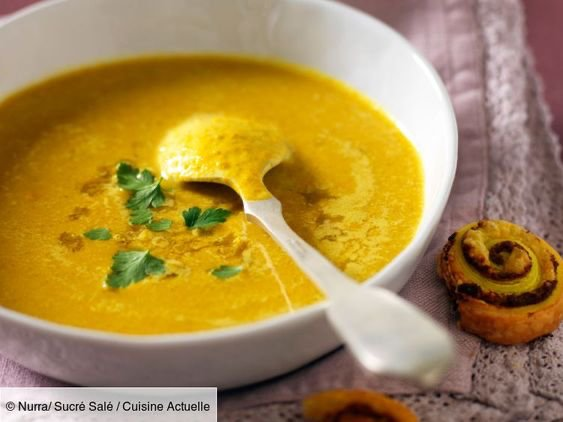

Soupe de lentilles corail au lait de coco
Ingredients
4×
- 1 oignon
- 1 c. à s. d'huile
- 2 c. à c. de curry
- 40 cl de lait de coco
- 300 g de lentilles corail
- 1 petite boîte de tomates
- 40 cl de bouillon
- sel
- poivre

Préparation
Étape 1
Éplucher et hacher grossièrement 1 oignon. Le rissoler 5min dans 1 c. à s. d'huile avec 2 c. à c. de curry.
Étape 2
Verser 40 cl de lait de coco et laisser réduire 5min.
Étape 3
Ajouter 300 g de lentilles corail, 1 petite boîte de tomates, 40 cl de bouillon, sel et poivre. Cuire 25min en remuant régulièrement.
Étape 4
Mixer et servir bien chaud.